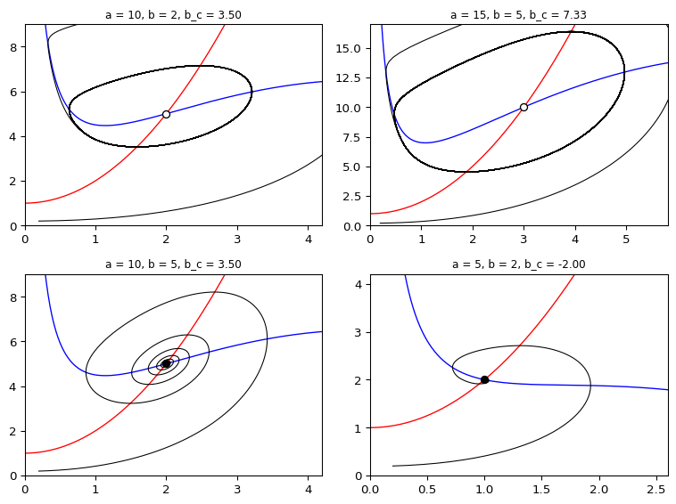
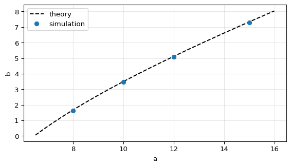

CDIMA: Parameter Map
Module 1: Low-Dimensional Dynamics
You now build a clickable map of the \((a, b)\) parameter plane of the CDIMA model: clicking a point shows the phase portrait for those parameters. You also locate the Hopf curve from simulations alone and compare it with \(b_c = 3a/5 - 25/a\) (Strogatz 2024, sec. 8.3).
Prediction
Exercise
Sketch the curve \(b = 3a/5 - 25/a\) for \(2 \le a \le 20\). In which part of the plane do you expect oscillations?
Solution
The curve is negative for \(a < \sqrt{125/3} \approx 6.45\), crosses \(b = 0\) there and then rises, reaching \(b = 3.5\) at \(a = 10\) and \(b = 10.75\) at \(a = 20\). The fixed point is unstable below the curve, so you expect oscillations in the region \(0 < b < 3a/5 - 25/a\), which only exists for \(a > 6.45\).
Implementation: the clickable map
The map has two panels. The left one shows the \((a, b)\) plane with the theoretical Hopf curve. A click there sets the parameters and redraws the right panel: nullclines, the fixed point and a few trajectories. The core of the code is the click callback.
Exercise
Complete the click callback. Assume fig, ax_map, ax_phase, cdima and solve_ivp are already defined.
def on_click(event):
if event.inaxes == ax_map:
a, b = event.xdata, event.ydata
# TODO: clear ax_phase
# TODO: draw nullclines y = (a - x)(1 + x^2)/(4x) and y = 1 + x^2
# TODO: integrate and plot trajectories from a few initial conditions
# TODO: mark the fixed point (a/5, 1 + (a/5)^2)
fig.canvas.draw_idle()
fig.canvas.mpl_connect("button_press_event", on_click)
Solution
def on_click(event):
if event.inaxes == ax_map and event.xdata > 0 and event.ydata > 0:
a, b = event.xdata, event.ydata
ax_phase.clear()
x_star, y_star = a / 5, 1 + (a / 5) ** 2
xmax, ymax = 1.6 * x_star + 1, 1.6 * y_star + 1
xg = np.linspace(0.01, xmax, 300)
ax_phase.plot(xg, (a - xg) * (1 + xg**2) / (4 * xg), "b", lw=1)
ax_phase.plot(xg, 1 + xg**2, "r", lw=1)
for x0, y0 in [(0.1, 0.1), (0.9 * xmax, 0.1), (x_star + 0.05, y_star)]:
sol = solve_ivp(cdima, (0, 60), [x0, y0], args=(a, b),
t_eval=np.linspace(0, 60, 3000))
ax_phase.plot(sol.y[0], sol.y[1], lw=1)
ax_phase.plot(x_star, y_star, "ko")
ax_phase.set_xlim(0, xmax)
ax_phase.set_ylim(0, ymax)
ax_phase.set_title(f"a = {a:.2f}, b = {b:.2f}")
fig.canvas.draw_idle()
fig.canvas.mpl_connect("button_press_event", on_click)run_parameter_map in amlab/odes_2d/cdima_analysis.py is a complete version. Run it locally (it needs an interactive Matplotlib window):
from amlab.odes_2d.cdima_analysis import run_parameter_map
run_parameter_map()The older script amlab/odes_2d/cdima.py also has a clickable stability diagram, combined with the animation from Animations and Interactivity.
Figure 1 shows what the right panel displays for four points of the map.
Validation: the Hopf curve from simulations
Without using the formula, decide for each \(a\) the largest \(b\) at which the long-run solution still oscillates. Simulate from a point near the fixed point, discard the transient and measure the amplitude of \(x(t)\).
from amlab.odes_2d.cdima_analysis import limit_cycle_amplitude
def oscillates(a, b, threshold=0.05):
return limit_cycle_amplitude(a, b, t_end=200.0) > threshold
def hopf_by_simulation(a, b_lo=0.05, b_hi=10.0, steps=10):
for _ in range(steps):
b_mid = 0.5 * (b_lo + b_hi)
if oscillates(a, b_mid):
b_lo = b_mid
else:
b_hi = b_mid
return 0.5 * (b_lo + b_hi)
a_vals = [8.0, 10.0, 12.0, 15.0]
b_sim = [hopf_by_simulation(a) for a in a_vals]
for a, b in zip(a_vals, b_sim):
print(f"a = {a}: simulation {b:.3f}, theory {hopf_b(a):.3f}")
aa = np.linspace(6.5, 16, 200)
fig, ax = plt.subplots(figsize=(6, 3.5))
ax.plot(aa, hopf_b(aa), "k--", label="theory")
ax.plot(a_vals, b_sim, "o", label="simulation")
ax.set_xlabel("a")
ax.set_ylabel("b")
ax.legend()
ax.grid(alpha=0.3)
plt.tight_layout()
plt.show()a = 8.0: simulation 1.639, theory 1.675
a = 10.0: simulation 3.465, theory 3.500
a = 12.0: simulation 5.078, theory 5.117
a = 15.0: simulation 7.284, theory 7.333
The simulated boundary lies slightly below the theoretical one. Near \(b_c\) the amplitude grows like \(\sqrt{b_c - b}\), so an oscillation with amplitude below the threshold 0.05 is counted as “no oscillation”. Lower the threshold and increase t_end to get closer to the theory.
Experiment and interpretation
Exercise
- Click points close to the Hopf curve. How does the size of the limit cycle change?
- For \(a < \sqrt{125/3} \approx 6.45\) the curve is below \(b = 0\). Can you find oscillations there?
Solution
The limit cycle shrinks to the fixed point as you approach the curve from below; its amplitude grows like \(\sqrt{b_c - b}\), as noted in the validation above. For \(a < 6.45\) you find no sustained oscillations: \(b_c < 0\), so every \(b > 0\) lies above the curve and the fixed point is stable.
The map turns the formula into a picture: one inequality between two parameters decides whether the reaction oscillates.
Exit question
Exercise
A student finds a limit cycle in a simulation at \(a = 10\), \(b = 3.6\). The theory says the fixed point is stable for \(b > 3.5\). Which is wrong?
Solution
Probably neither is wrong yet, but the claim needs checking. For \(b = 3.6\) the eigenvalues have real part \(-0.02\), so the decay is slow: a trajectory can look like a limit cycle for a long time. Integrate longer and measure the amplitude at late times. If a cycle truly persisted above \(b_c\), the bifurcation would be subcritical, which the amplitude measurements in Hopf Bifurcation do not support.
Next
Session 9 studies excitable systems.
References
Strogatz, Steven H. 2024. Nonlinear Dynamics and Chaos: With Applications to Physics, Biology, Chemistry, and Engineering. Chapman; Hall/CRC.